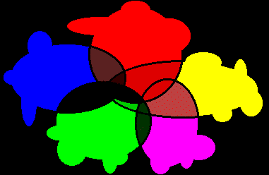

CCCP ATP Systems
Cooperation
- Non-cooperative systems solve maximally the union
- Cooperation can significantly affect performance
- Cooperation by control is problematic

Cooperation by Intermediate Results
- Communicate intermediate results
- From slice to slice in time-slicing systems
- During runtime for competition systems
- Depth of coverage
- Synergy
- Increased depth of coverage
- Super-linear speed ups
- CCCP